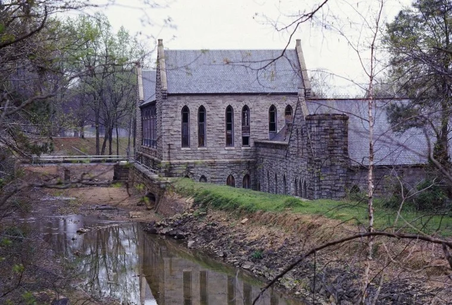

The Byrd Park Pump House has an interesting and strange history. It was built in the late 19th century in a Gothic revival style, and contained the city's main waterworks from 1883 to 1924. Water was drawn directly from the James River and Kanawha Canal and pumped uphill to the Byrd Park Reservoir, which was Richmond's primary water supply.
The pump house was also a favorite place for parties. It was used as a social venue for dances, where well-dressed Richmonders boarded a flat-bottomed boat at 7th Street for a relaxing cruise up the canal to the ballroom.
The building closed in 1924, and had its pumps sold for scrap metal before the start of the Second World War. The city scheduled the pump house for demolition, but sold it to First Presbyterian Church for one dollar.
The pump house is filled with echoes of the past, including several spine-tingling haunts. One is the ghost of Daniel Tetweiler, a man who reportedly hung himself inside. Another is the apparition of "Elizabeth," who is seen floating around the premises as a glowing orb of light. One paranormal investigator, Robert Bess, says the pump house is "exteremely haunted." He thinks the place is actually a portal; elements of the building's composition mix to create a conductor through which paranormal activity can enter our reality. There is moving water, steel, a roof made of slate, and iron all through the structure.
The idea of portals may seem a bit "out there," but there is no doubt that the pump house has a facinating history and is an extremely creepy location, one that is a required stop on any tour of Richmond. The city is currently attempting to revive the structure. You can visit the pump house official website for directions and more info.
Thanks for coming along on this spooky tour of Richmond. I hope you will go out explore these locations on your own, or better yet, go with a friend for backup in case you actually encounter something "otherworldly."